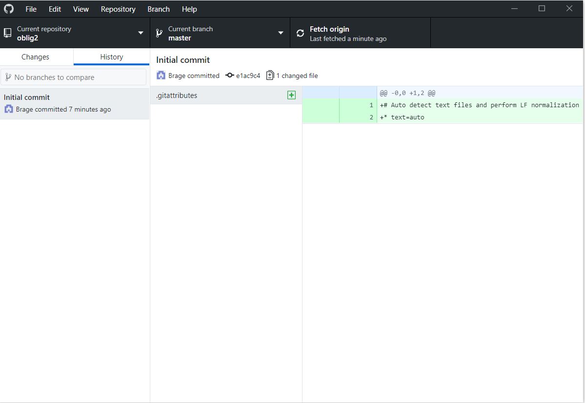

Hva er Git og Github? Github er en utbygging av Git  Github er en utbygging av Git Git er en måte å kunne samarbeide mellom flere folk på samme filer, uten å måtte tenke på at dine eller andres endringer ødelegger for hverandre. Det fungerer på en slik måte at du lager en egen «gren» av websiden, og endrer på den. Dette er det bare du som endrer på. Dette gjør alle som er med i prosjektet. Når man er ferdig med å endre, og vil lagre det inn i programmet, så vil det komme en anmodning om å få lagret i den gjeldende filen. Dette kan det være noen som har som oppgave å gå igjennom i større prosjekter, men også du i mindre prosjekter. Det vil gå uten problemer dersom koden i samme fil er endret på forskjellige steder. Dersom det er flere som har endret på samme koden i samme fil, vil det komme en konflikt som må løses før sammensveisingen kan bli utført. Git holder også en oversikt over hvilke endringer som er gjort. Dette gjør at dersom en feil ødelegger mye i filen, så vil git kunne rulle tilbake til en tidligere versjon der det fungerte. Github gjør hovedsakelig at fildelingen skjer online. Det er ikke lenger noe som bare skjer lokalt lenger. Det er et åpent nett, der du kan se hva andre har laget, og andre kan se hva du har laget. De kan da gjøre endringer på koden, og foreslå den til deg for å muligens forbedre den.